Polymnia Futura
Polignano a Mare, between memory and innovation.
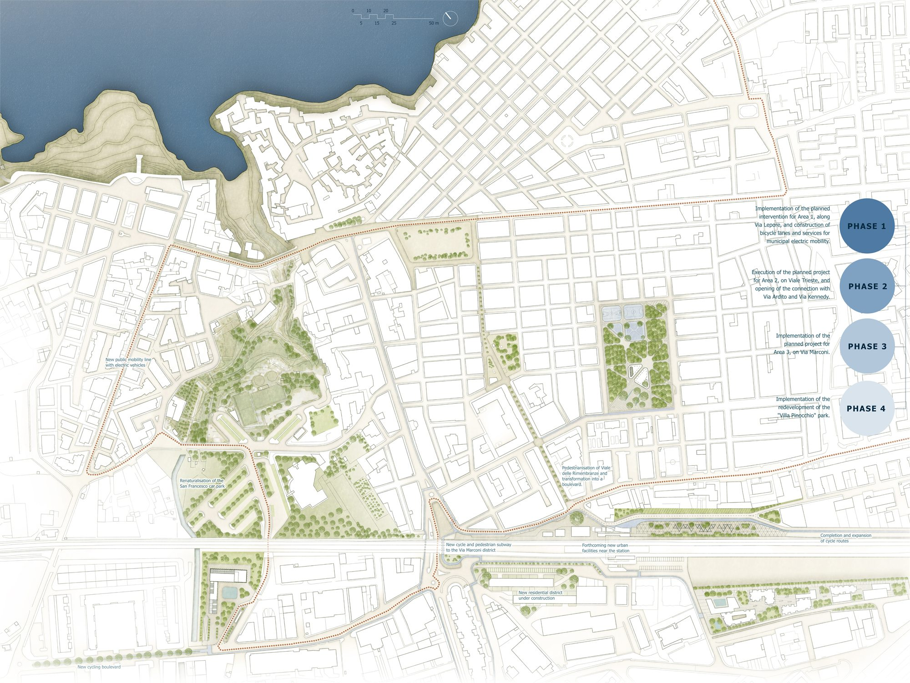
Polymnia Futura takes its name from Polignano's ancient roots and turns it toward the future, weaving a narrative of continuity between the town's history and a new chapter of sustainable growth. The proposal reinterprets Polignano's genius loci — its karst ravines, calcarenite stone, relationship with the sea, and agricultural heritage — as resources to be reactivated within a resilient, inclusive city.
Strategic vision — re-sourcing
The design responds to the tension between residents and tourists that has intensified with rapid tourism growth, along with traffic congestion, a severe parking shortage, and real-estate speculation driving gentrification. The re-sourcing strategy converts underused areas into sustainable-mobility hubs, turns residual spaces into shared social venues, and renaturalizes impermeable surfaces into drainage systems inspired by the local karst ravines. Across the four sites the project renaturalizes over 24,000 m² of sealed ground and plants 300 trees to cut summer temperatures by at least two degrees, with local materials making up roughly 80% of what is used.
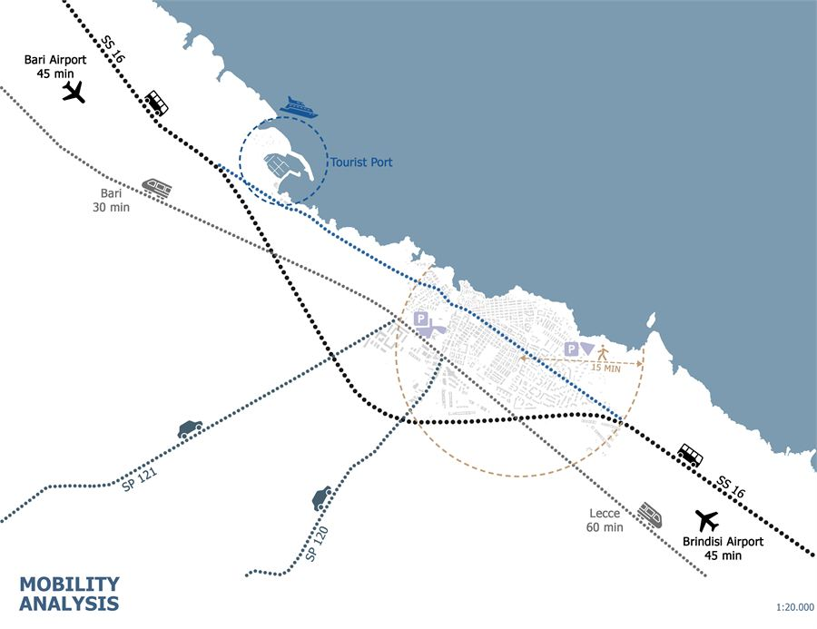
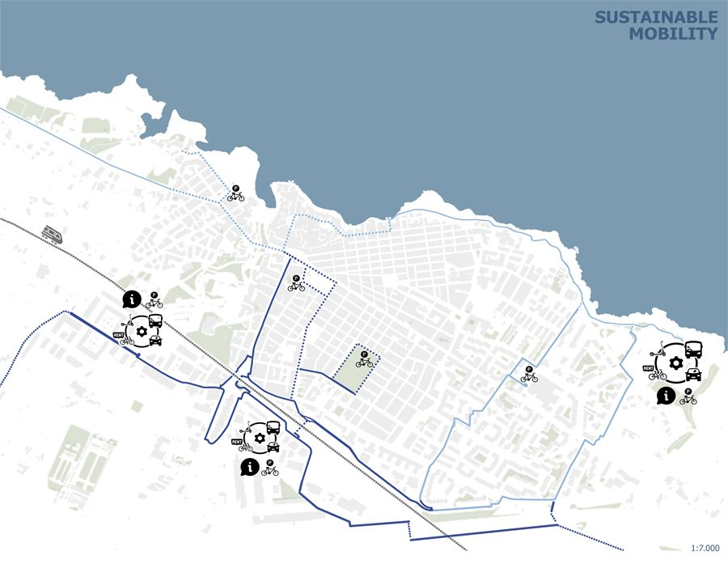
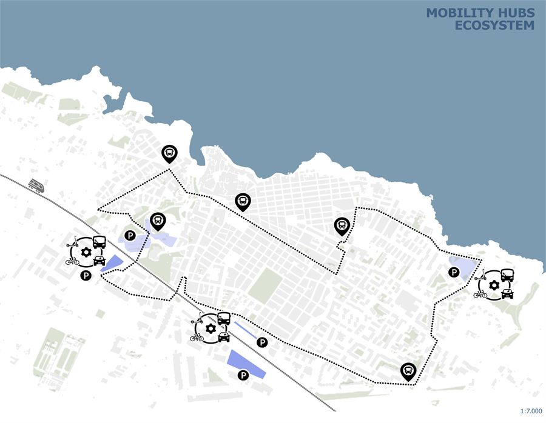
Area 1 — Via Lepore: the new city gate
Reimagined as the primary arrival point for visitors coming by car: a two-level, 220-space underground car park with a green plaza above, and a three-storey building holding a tourist information centre, bus ticketing, bike rental, retail galleries and panoramic terraces over the historic centre and the Lama Monachile ravine.
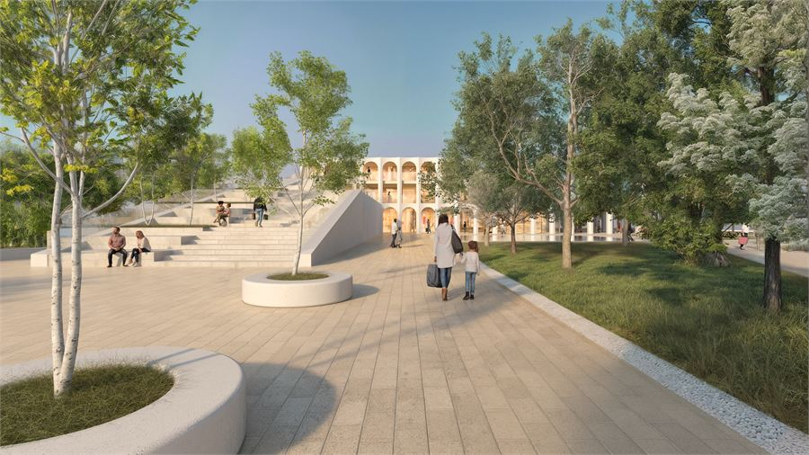
Area 2 — Viale Trieste: railway gateway
Long used only as parking beside the rail tracks, this elongated site becomes an active public space built around a new cycling hub, a drop-off road, a tree-lined buffer to the railway, seating, and pavilions for markets and events tied to local produce.
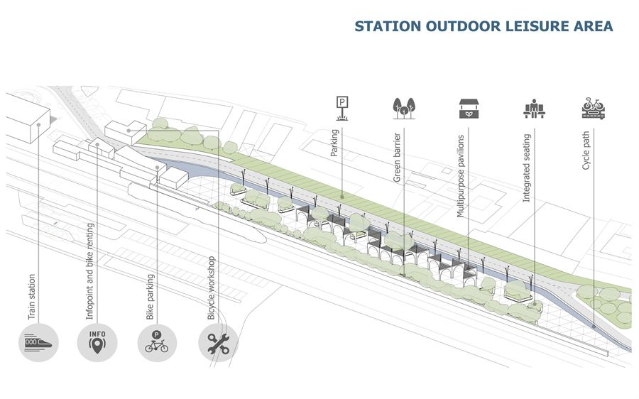
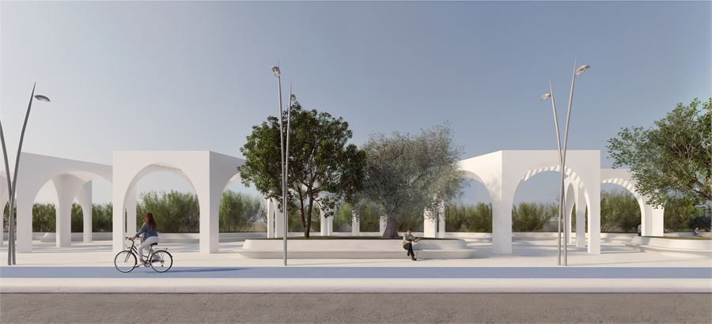
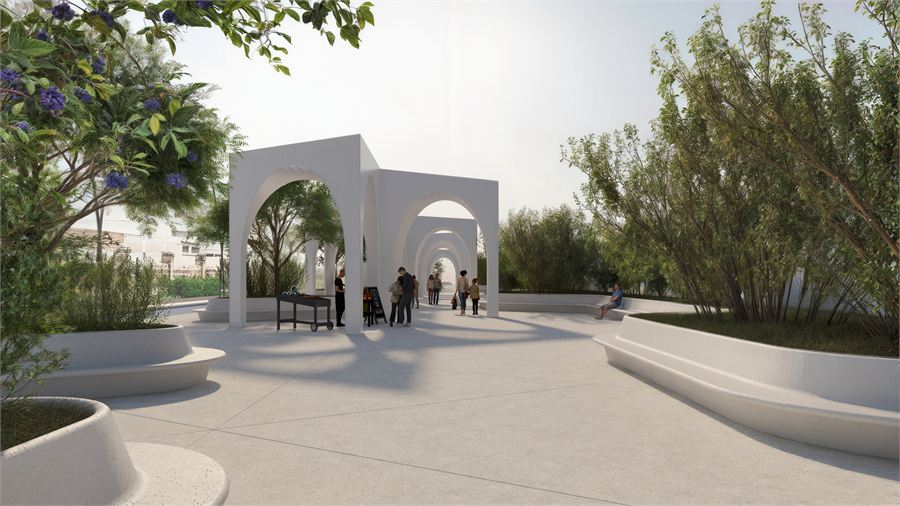
Area 3 — Via Marconi: social housing
A mixed-use complex — 70% social housing, 30% neighbourhood services including shops, offices, a gym and pool, medical services and a nursery. Units run from 38 to 80 m², with 15 m² of green space per resident. NZEB-standard buildings are shaped for natural ventilation, solar gain and shading, with locally sourced stone cladding and rooftop photovoltaics feeding a hybrid climate system.
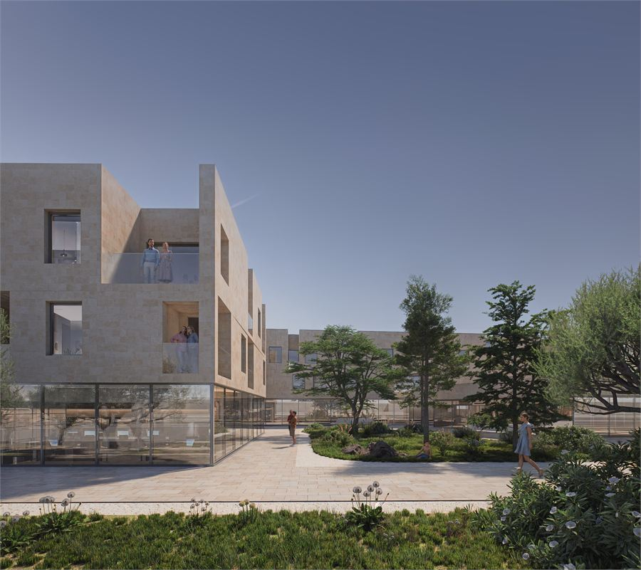
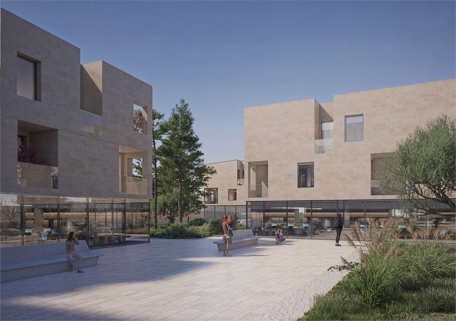
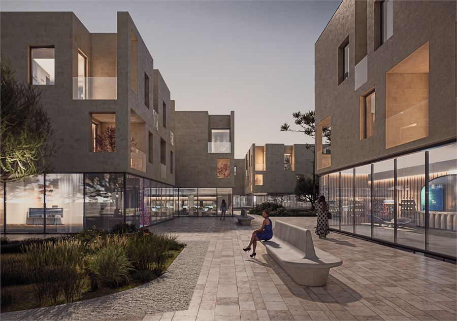
Area 4 — Villa Pinocchio: an open urban park
Removing the park's perimeter fencing reconnects it to the surrounding street grid, turning it into a through-route for play, culture and rest. A children's play area, basketball and five-a-side courts, reading and relaxation spaces sit among the preserved existing trees, while the edge along Via Papa Giovanni XXIII becomes an urban piazza framed by a kiosk-bookshop and café.
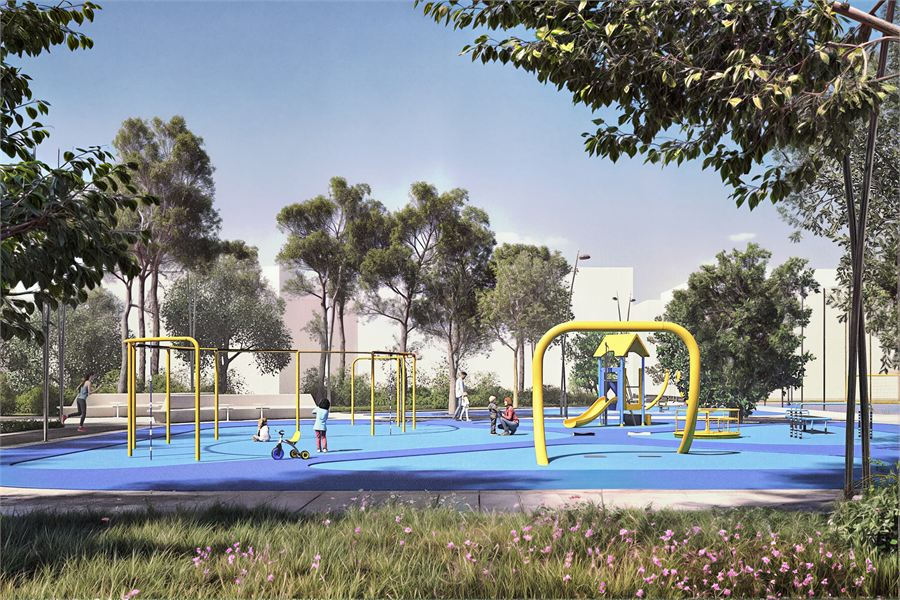
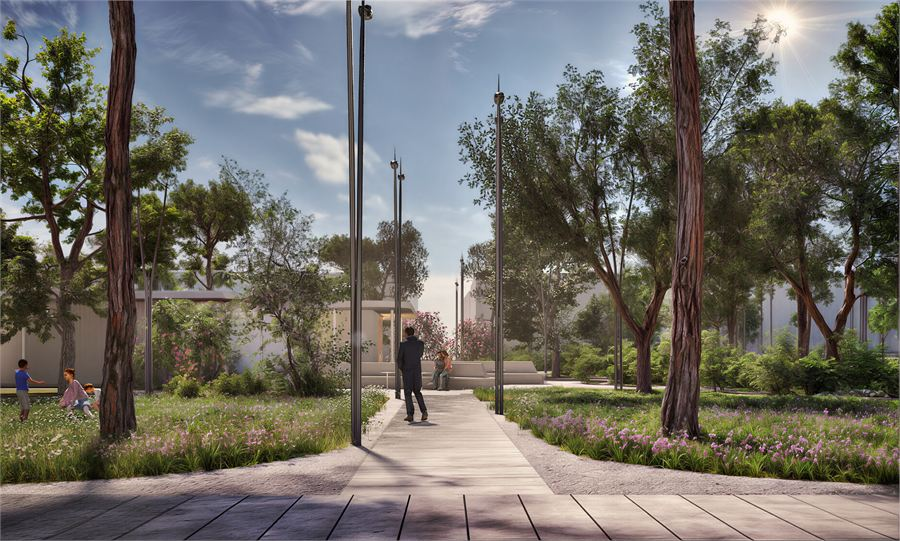
Delivery
Phased from Area 1 — which addresses the most urgent parking and tourism-service shortfall — then Area 2, the larger Area 3 housing intervention, and finally Villa Pinocchio. Altogether the project delivers 11,700 m² of new green space and uses 60% local, recycled or eco-compatible materials, with all new buildings powered by renewable energy. A three-tier governance model led by the Municipality of Polignano a Mare — with RFI, FS Sistemi Urbani, the Puglia Region, the Metropolitan City of Bari and ARCA Puglia — oversees delivery, supported by an open-data platform tracking mobility, environmental and social indicators.